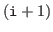

Next: Function reference Up: Sample programs Previous: Using from Fortran 77
/* sample program for CP-ACE functions implemented on ACP */
#include "cp_acp.h"
#include <stdio.h>
int main(int argc, char **argv){
double *sendbuf; /* send buffer */
double *recvbuf; /* receive buffer */
long sendsizes[2]; /* sizes of data sent to other processes */
int dests[2]; /* ranks of destination processes */
int destcount; /* number of destination processes */
long recvsize; /* total size of receive data */
int rank;
int i;
acp_init(&argc, &argv);
rank = acp_rank();
/* allocate send and receive buffers */
sendbuf = cp_acp_allocate(3 * sizeof(double));
recvbuf = cp_acp_allocate(3 * sizeof(double));
/* data and destination processes */
if(rank == 0){
/* rank 0 sends 1.0 and 2.0 to rank 1 and sends 3.0 to rank 2 */
sendbuf[0] = 1.0;
sendbuf[1] = 2.0;
sendbuf[2] = 3.0;
sendsizes[0] = 2 * sizeof(double);
sendsizes[1] = 1 * sizeof(double);
dests[0] = 1;
dests[1] = 2;
destcount = 2;
}else if(rank == 1){
/* rank 1 sends 4.0 to rank 0 */
sendbuf[0] = 4.0;
sendsizes[0] = 1 * sizeof(double);
dests[0] = 0;
destcount = 1;
}else{
/* rank 2 sends no data */
destcount = 0;
}
/* exchange data */
recvsize = cp_acp_export(sendbuf, sendsizes, dests, destcount,
recvbuf, 3 * sizeof(double));
/* print receive data */
for(i = 0; i < recvsize / sizeof(double); i ++){
printf("rank %d received %f\n", rank, recvbuf[i]);
}
acp_finalize();
return 0;
}
#include "cp_acp.h" includes declarations of CP-ACE functions.
acp_init must be called before calling CP-ACE functions.
cp_acp_allocate allocates send and receive buffers. The argument 3 * sizeof(double) specifies the size of send or receive buffer in bytes.
cp_acp_export sends data to some processes and receives data which other processes have sent by cp_acp_export (Figure 1). The first argument sendbuf specifies a pointer to the send buffer. The head of sendbuf is sent to the first destination process, following data are sent to the second destination process, following data are sent to the third destination process and so on. The second argument sendsizes is an array that contains sizes of data sent to destination processes. sendsizes[i] specifies the size of data sent to the -th destination process in bytes. The third argument dests is an array that contains ranks of destination processes. dests[i] specifies the rank of the -th destination process. The fourth argument destcount is the number of destination processes. The fifth argument recvbuf is a pointer to the receive buffer. If a process receives from multiple processes, the order of data received from one process and data received from another process is undefined. The last argument 3 * sizeof(double) is the size of the receive buffer in bytes. cp_acp_export returns the size of total receive data in bytes.
To compile this program, type
acpcc acp_export.c -lcp_acp
You can execute this program like
acprun -acp-nprocs 3 -acp-startermemsize=20000 ./a.out
cp_acp_allocate allocates memory from ACP starter memory excluding first 10240 bytes. Starter memory must be large enough to contain the 10240 bytes, work region for CP-ACE functions (8 bytes), the send and receive buffers.
This program prints
rank 0 received 4.000000 rank 1 received 1.000000 rank 1 received 2.000000 rank 2 received 3.000000